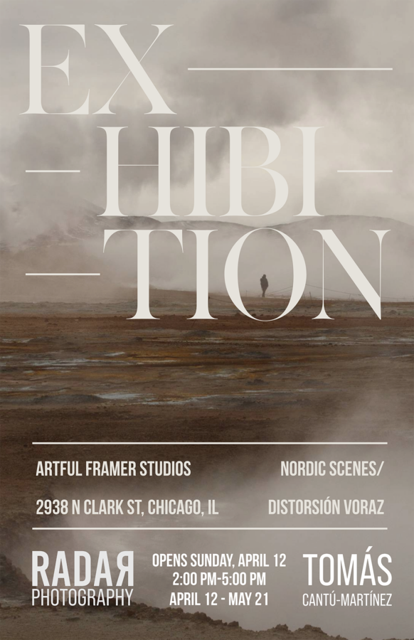

Tomás Cantu-Martinez: Distorsión Voraz / Nordic Scenes
Join us for the opening reception of Distorsión Voraz / Nordic Scenes, a new body of work by Chicago-based Mexican-American architect and photographer Tomás Cantu-Martinez. Rooted in his architectural training, Tomás explores perception through form, light, and distortion—challenging how we experience space and image.